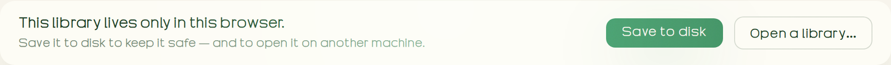
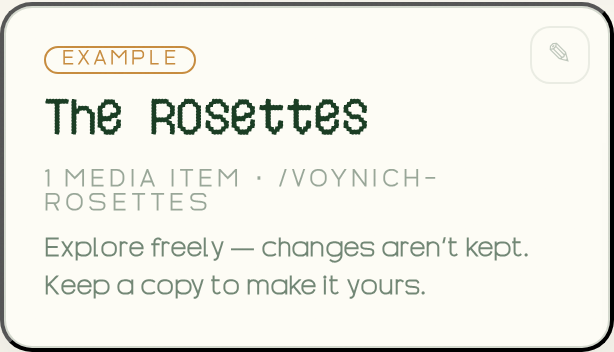

Archie Learn · Onboarding · Step 3 of 7
Where your work lives
There's no Save button to forget — Archie autosaves as you go. The one catch worth knowing up front: by default it saves only inside this browser. Here's how to keep your work safe.
Plain and quick. Switch to Advanced for how storage actually works under the hood.Scholar/maker mode: the storage backends and the on-disk format. Back to Simple any time.
1. Autosave is on — but where does it save?
Your Library lives in exactly one home at a time. Autosave keeps that home current — so the only thing that matters is which home it is.
.archie.zip file

.archie.zip on other browsers. On disk a library is plain JSON plus your media — diff-able and Git-friendly. The same .archie.zip is also the unit of async collaboration: share a copy, import changes back, and edits merge by version history — no server.
2. Examples are Playgrounds — your work is a Project
The Exhibits shown as Example are Playgrounds: open one, poke around, but your changes aren't kept. "Keep a copy" turns it into a Project of your own — saved, and yours to edit.

Your first move
You imported media in Step 2 — now make it safe. On the Library home, click Save to disk and pick a folder (or save a .archie.zip). From then on it autosaves there, and you can reopen it anywhere with Open a library….
I'm your guide. Unsure whether your work is saved, or which home it's in? Ask — I'll show you exactly where to look in the app.